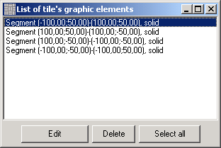
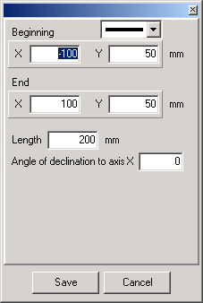
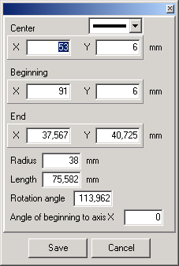
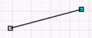
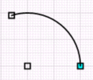
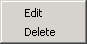

To edit the graphic object, select it and press the Edit button: the object you select will be highlighted green.
|
|
| · | Delete - press it to delete the selected object;
|
| · | Select all - press it to select all objects in the list, and, for example delete them at once.
|
If you want to modify the line segment, press Edit.
The following window will pop-up:

Here you can:
| · | Change the line type. Please note that for the outline of a tile or a plot you should use solid lines only;
|
| · | Change coordinates where the segment starts/ends;
|
| · | Change the segment length: the starting point will remain on the same place and the endpoint will shift along the segment, and its coordinates will change;
|
| · | Change the slope angle of the segment on the X axis, relative to the starting point of the segment.
|
The following window will pop-up, if you want to edit an arc:

Here you can:
| · | Change the line type. You can change only the outline of a tile!
|
| · | Change coordinates of an arc centre: the arc may change its position but the size will remain the same.
|
| · | Change coordinates of the start point: the arc will shift the circle clockwise (or anticlockwise), the radius value may change, but the spanning angle will remain the same;
|
| · | Change coordinates of the endpoint: the arc radius value may change; the start point may shift to/from the arc centre; the spanning angle may also change;
|
| · | Change radius value: the arc will become bigger or smaller though the spanning angle will remain the same;
|
| · | Change arc length: the spanning angle value will change and as a consequence the coordinates of the start/endpoint will also change;
|
| · | Change spanning angle value: it will influence the same values if to change length;
|
| · | Change angle relative to X axis: the arc will shift clockwise/counterclockwise the circle; other parameters will remain the same.
|
The second method to edit graphic objects is to act directly on the draft: find on the toolbar the Select graphic object button . Press it and select the object you want to edit: special labels will appear at the start and the end of the graphic object. The start point of the object will be colored blue.

If you chose the arc, then the ends and the centre of the object will be labelled.

Use labels to change its size and move the object when you join different drawing entities.
If the option is enabled, click right to open the context menu:

Click the first option to open the properties window to edit the object; click the second option to delete the object.